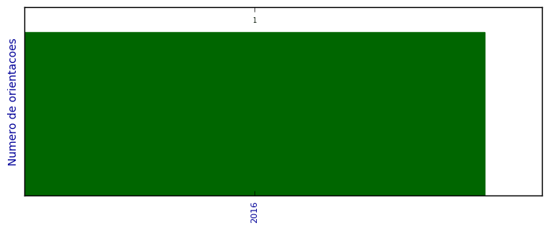

Voltar
Produção DMA
Supervisão de pós-doutorado

Número total de itens: 1
2016
1.
Maria Rosario Astudillo Rojas.
. Universidade Estadual de Maringá, Coordenação de Aperfeiçoamento de Pessoal de Nível Superior.. Início: 2016.
Supervisor:
Marcelo Moreira Cavalcanti
.
Data de processamento: 03/08/2018 15:53:54